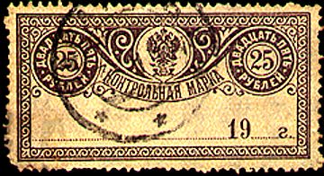
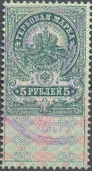
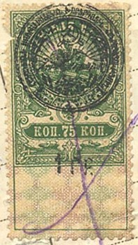
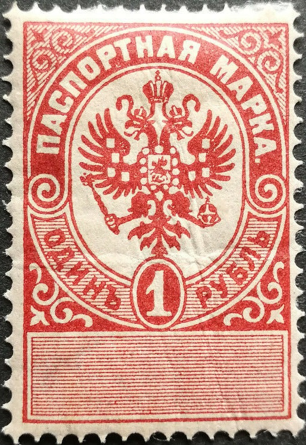

Return To Catalogue - Russia Fiscal stamps, part 2 - Russia Fiscal stamps, St.Petersburg - Russia overview
Note: on my website many of the
pictures can not be seen! They are of course present in the
catalogue;
contact me if you want to purchase the catalogue.


Value of the stamps |
|||
vc = very common c = common * = not so common ** = uncommon |
*** = very uncommon R = rare RR = very rare RRR = extremely rare |
||
| Value | Unused | Postally Used (on letter) | Remarks |
| 1 k | c | c | |
| 5 k | c | c | |
| 10 k | c | c | |
Fiscal overprints? (I've been told that these overprints were used in Kiev, I have no other information):
(Reduced sized images)
The following values were issued (all slightly different designs): 5 k red, black and blue 10 k dark brown and light brown (1879) 15 k green and yellowish green 40 k red and black 60 k light blue and dark blue (1879) 80 k red (1888) 1 R brown (1901)
These are most likely the most encountered fiscal stamps of Russia. There are some slightly different types of these stamps. Note for example the different bottom part or the ornaments besides the crown on the 5 k and 40 k stamps. Also the horizontal or vertical lines in the label at the bottom in the 10 k stamps. Also the 15 k green exists with two different inscriptions (with or without an additional "b" character as fourth letter in the value inscription) and different bottom parts. Also the 60 k with horizontal or vertical lines in the bottom part and the ornaments next to the crown pointing up or down.


The following stamps exist in the above design: 5 k brown, 10 k green, 15 k blue, 20 k brown, 50 k red, 75 k green, 1.25 R black, 3 R blue and 5 R green. These stamps have an underprint in a different colour.


Similar designs, but with a lion in the center were issued for
Bulgaria. They were first printed in Russia.

20 k brown, later issue?
1910 revenue. Court service fees.

Residence permit left 1889 issue for men: 43 k, 72 k, 1.43 R,
2.15 R and 3.58 R exist, for women the values: 15 k, 36 k, 73 k,
1.08 R and 2.15 R exist. Right the 1895 issue, for men the
following values exist: 86 k, 1.34 R, 2.86 R, 4.29 R and 7.15 R.
For women the values 29 k, 72 k, 1.43 R, 2.15 R and 4.29 R exist.
The other numbers on the stamps indicate the 'class' (from 1 to
5).


1891 issue; the following values exist: 25 k, 50 k, 1 R, 3 R and
5 R.

1895 Passport tax, the following values were issued: 15 k brown,
20 k brown, 35 k green, 50 k blue and 1 R red.

Tobacco tax stamp issued in 1871. It exists in the following
values: 1 1/2 R brown and black, 2 1/2 R orange and black, 3 R
green and black, 5 R blue and black, 10 R red and black and 20 R
violet and black. In 1902 the values 5 R and 10 R were re-issued
with a smaller eagle and shorter inscription.


{kind=link}
{kind=link}